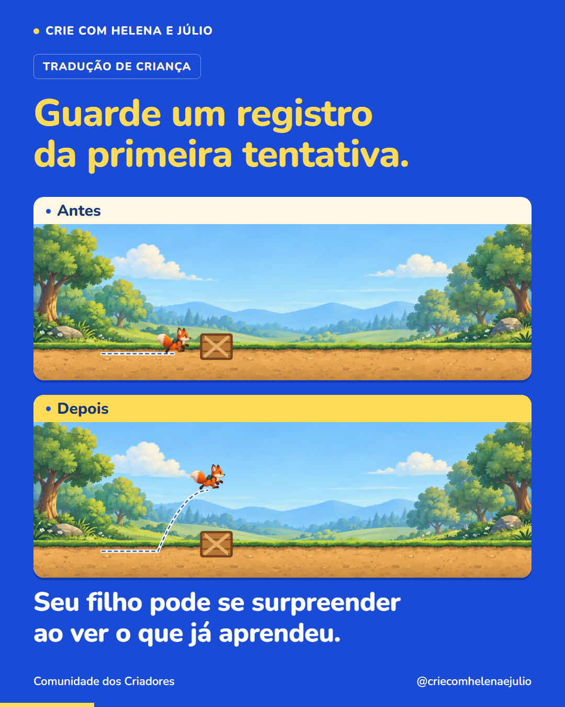

P49 · Guarde um registro da primeira tentativa. Seu filho pode se surpreender ao ver o que já aprendeu.
Imagem única · 1080 × 1350 · Tradução de criança · Segunda publicação da semana 8


Legenda completa
Uma foto ou um vídeo curto pode ajudar seu filho a enxergar uma mudança no que ele faz. No começo de um projeto, o personagem talvez só ande. Depois, ele passa a pular e desviar de obstáculos. Comparar esses momentos permite perguntar: ‘O que você aprendeu a fazer entre uma versão e outra?’ Peça para ele escolher algo de que se orgulha e contar como conseguiu. O registro serve para observar uma conquista concreta e lembrar do caminho percorrido. A imagem deste post mostra duas versões de uma demonstração feita pela nossa equipe. Siga o perfil para acompanhar outras descobertas de quem aprende criando jogos.